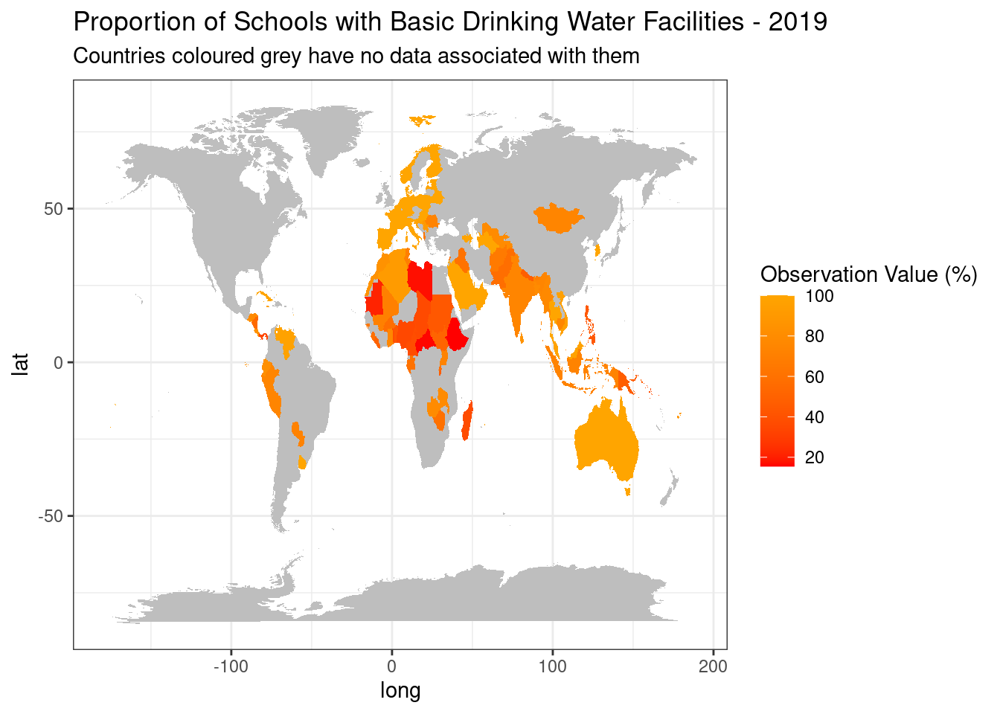

Health and Hydration
School Water Facilities Impact on Life Expectancy

Introduction
UNICEF uses data to drive better results for children across the world. The indicator being investigated in this report is the Proportion (%) of Schools with Basic Drinking Water Facilities in each country. This can be related to:
- SDG 1 No Poverty
- SDG 3 Good Health and Well-being
- SDG 6 Clean Water and Sanitation
- SDG 10 Reduced Inequalities.
In wealthier nations, this might not seem like a big deal, but in many developing countries, especially during the summer, water scarcity is a problem. This report looks into data discrepancies between nations that experienced water scarcity and surplus in 2019, prior to the COVID-19 pandemic.

Analysis
Water Scarcity: A Global Problem
This map shows the proportion (%) of schools with basic drinking water facilities across the globe. It is clear to see that wealthy nations, such as European countries and Australia, have access to water facilities. The red colours in Northern Africa make it evident that these developing countries are struggling to provide safe drinking water facilities in schools. The map makes it clear to see that Northern Africa is the most water-stressed area of the world.
A True Look at Water-Stressed Countries
This graph shows the movement in the proportion (%) of schools with drinking water facilities across North Africa for the 10 year period 2009-2019. It is hoped that this statistic will continue to improve into the future. Hover over a line to see more information about each country.
Developed Vs Developing
The following graphs highlight the difference in drinking water facilities in developing countries compared with developed countries. It is hoped that these disparities in data will reduce as UNICEF gets closer to its goal of ending poverty by 2030.
The scatterplot highlights the relationship between life expectancy at birth and the availability of basic drinking water facilities in schools all over the world for the year 2019. The cluster of dots in the top right corner of the graph lead us to believe that having access to drinking water in education facilities increases life expectancy. Hover over each dot on the graph to see more information.
Conclusion
As we analyse the data above, there is a clear relationship between the availability of drinking water facilities and life expectancy at birth. The water-stressed countries of North Africa lack basic amenities in schools. This has an impact on the health of the nation and therefore results in a shorter life expectancy. The wealthier countries in Europe have more money to spend on facilities to improve the quality of life for the citizens. It is UNICEFs aim to bridge the gap between first and third world countries by reducing inequalities across the globe.